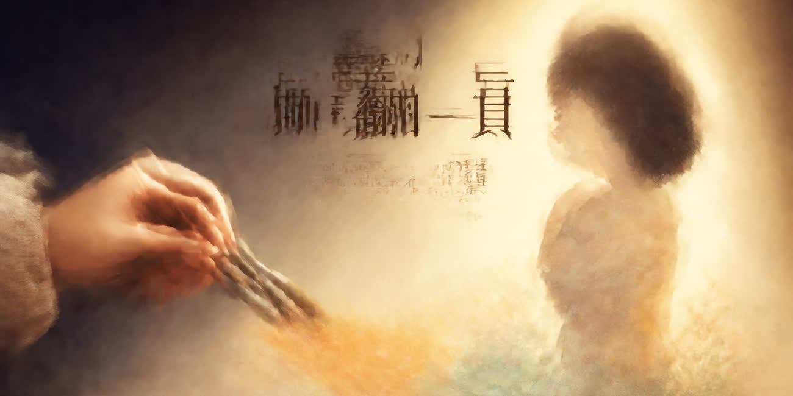
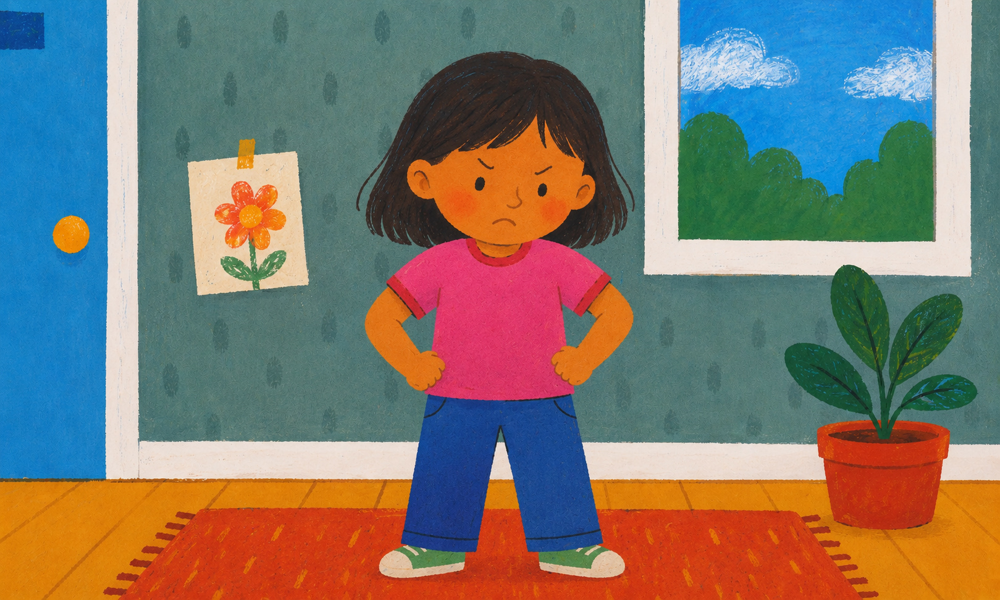
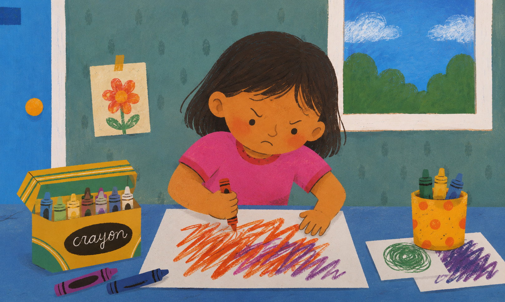
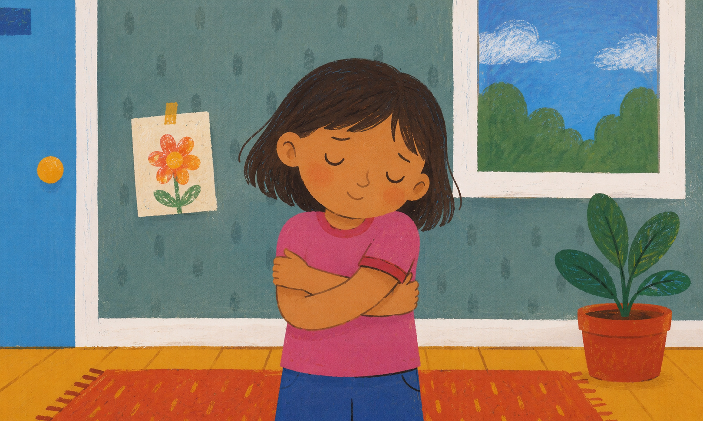

嗨嗨！我是卿鬆。不知道你是不是也跟我一樣，有一天發現這個世界再也無法讓你逃離吵雜的生活。
跟著我，找回生活的專注與平靜。在這個專屬空間裡，除了有精心挑選的書中精華，文末也為你準備了暖心的小驚喜！
這一期帶來的書是 「我想打人的時候該怎麼辦？」

雖然這是本兒童教育繪本，但就算是長大的我們，也有各式各樣的情緒，有開心、傷心，也有生氣。
當情緒太強烈時也可能會控制不住，雖然不會像小朋友一樣動手，但腦中那種無法控制的感覺一定有過。


童書最觸動人心的莫過於就是短短語句，就能讓人心情平靜，我想這就是文字的力量吧。
看到這篇文章的你，不知道是不是今天也正碰到無法處理情緒的時刻呢？
今天的分享很短，就到這裡。關掉畫面後，先給自己一個大大的擁抱吧。
無論今天過得如何，你已經很努力了。先抱抱自己，明天又是新的一天。
感謝您今天的閱報，讀者禮「10元購物金」限量100份
輸入兌換碼「卿鬆擁抱自己」就可以兌換（發報後7天內有效）
卿鬆翻一頁，我們下頁見！